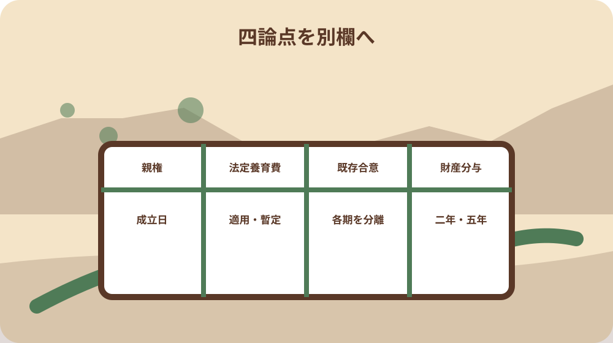
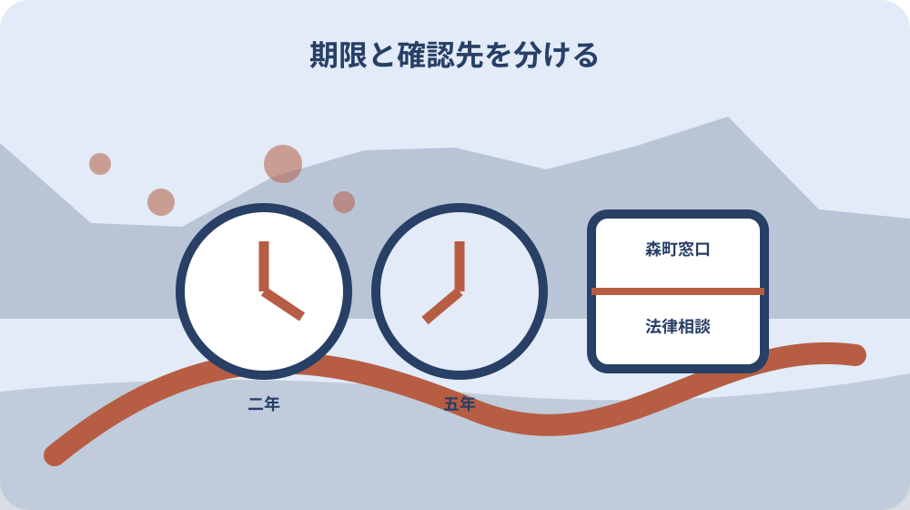

先に結論を確認する
この記事の答え：まず離婚成立日が2026年3月31日以前か4月1日以後かを公的な控えで確定します。法定養育費は4月1日以後の離婚に限る欄、財産分与の申立期間は3月31日以前なら二年、4月1日以後なら五年の欄へ分け、親権者の定めと既存養育費合意の経過措置も別欄で確認します。
森町で最初に照合する条件：協議離婚では届出によって効力が生じるため、受付予定日ではなく受理された日を住民生活課の控えで確認し、一件表の離婚成立日へ転記する。
結論は離婚成立日を施行日前後へ分ける
森町で2026年春に離婚手続を進めるとき、最初に作る成果物は手続の長い一覧ではなく、離婚成立日を起点にした一件表です。上段へ氏名と子の有無、中央へ成立日、その右へ親権、法定養育費、既存の養育費合意、財産分与という四論点を置きます。
境目は2026年4月1日です。3月31日以前の離婚と4月1日以後の離婚では、法定養育費の適用有無と、財産分与について家庭裁判所へ申し立てられる期間が異なります。日付を曖昧にしたまま二万円、二年、五年という数字だけを写すと取り違えます。
一件表の直接回答は簡潔です。公的な控えから離婚成立日を確定し、3月31日以前なら法定養育費は適用外、財産分与は離婚から二年、4月1日以後なら法定養育費の適用を確認し、財産分与は離婚から五年という別の行へ進みます。
この記事は離婚を勧めるものでも、親権・養育費・財産分与の結論を代わりに決めるものでもありません。町と法務省が公表した基準日を正確に振り分け、本人が住民生活課、こども家庭係、法律専門職、家庭裁判所へ何を確認するかを整えるための実務台帳です。すでに離婚した人も、成立日と当時の文書を起点に同じ表を作れます。
届出予定日ではなく成立日を証拠から写す
森町の案内では、協議離婚は届出によって効力を生じます。そのため、一件表へ書くのは夫婦で話し合いがまとまった日や届書を記入した日ではなく、役場で届出が受理されて効力が生じた日です。予定日と成立日を別欄にし、受付後の控えで確かめます。
裁判離婚について、森町は調停成立または審判・判決の日から十日以内に届出をするよう案内しています。裁判手続の種類ごとにどの日を成立日として扱うかを推測せず、調書や裁判書類に記された日付を転記し、分からない点は住民係や手続を担当した専門職へ確認します。
表には『手続の種類』『出来事の名称』『書類に記された日』『役場へ届けた日』『成立日として確認した日』『確認先』の六欄を置きます。こうすると、四月一日をまたぐ日程でも、役場へ行った日だけを基準に新旧ルールを選ぶ誤りを避けられます。訂正や追完があった場合は元の日付を消さず、受付結果を別行で追加します。
協議離婚の届書には成人に達した証人二人の署名が必要です。これは届書準備の事実であり、改正法の適用を分ける成立日とは別の欄です。本人確認書類や氏、住所などの一般的な届出準備は既存の総合記事へ譲り、本稿の表では成立日の根拠資料だけを太枠にします。
親権者の定めを旧ルールと新ルールへ振り分ける
森町の案内は、2026年4月1日から離婚後の親権者を父母双方とする共同親権、または一方とする単独親権のいずれも選べるとしています。施行日前の様式や説明だけを手元に残している場合は、成立日と最新様式の確認日を並べて更新します。
協議離婚では父母の協議で父母双方または一方を親権者と定めます。話合いが調わない場合や裁判離婚では、家庭裁判所が父母と子の関係など諸事情を考慮し、子の利益の観点から定めます。一件表に多数決や家族の希望だけで確定した印を付けません。
親権者欄は『共同か単独か』だけで終えず、誰が決める段階かを記録します。父母の協議中、家庭裁判所の手続中、確定資料を受領済みという状態を分け、子ごとに結論が異なる可能性も含めて書類と対応させます。
町の住民生活課は離婚届の受理や戸籍関係の案内を担いますが、紛争の法的見通しを決める場所ではありません。親権の選択に争い、安全上の懸念、子の生活への重大な影響がある場合は、窓口で結論を求めず、法律相談や家庭裁判所の手続案内へ論点を渡します。
共同親権の行使を一律の二人署名にしない
父母双方が親権者の場合、森町の説明では親権を共同して行うのが原則です。一方で、父母の一方が親権を行えない場合、日常の監護教育に関する行為、子の利益のため急迫の事情がある場合には、単独で行使できるルールも示されています。
したがって、一件表へ『共同親権だから学校、医療、役場の全手続に必ず二人の署名』と書くのは避けます。行為の名称、予定日、急ぎの程度、案内を出す機関、誰の同意や署名を求められたかを一件ずつ記録し、最新の公式説明を確認します。
特定の事項について、家庭裁判所の手続で親権行使者を定める仕組みもあります。ただし、どの事情で申立てが適切か、どの資料が必要かは個別判断です。表は申立ての要否を断定せず、争点と相談日、案内を受けた手続名を残すところまでにします。
子の転居、進学、治療などを同じ重要度で一括処理しません。日常行為か、急迫の事情か、共同で行うべき事項かを本人だけで確定せず、学校や医療機関の事務案内と法律上の判断を分けます。機関から得た回答には担当部署、回答日、参照ページを付けます。
法定養育費は適用日と暫定性を同時に記録する
法務省は、2026年4月1日以後に離婚し、離婚時に養育費の取決めがない場合、離婚時から引き続き主として子を監護する父母が他方へ法定養育費を請求できると説明しています。額は子一人当たり月額二万円です。
この二万円は標準的な養育費額を自動決定する数字ではありません。法務省は、法定養育費を取決めまでの暫定的・補充的な仕組みと位置付け、収入などを踏まえた適正額を協議や家庭裁判所の手続で決める重要性を案内しています。
表では『離婚成立日』『施行日以後か』『離婚時の取決めの有無』『主として監護する父母』『子の人数』『法定養育費の相談状況』を別のセルにします。子の人数を掛けた額だけを請求確定額として表示せず、適用条件を専門家へ確認した日を残します。
施行日前に離婚した場合、法務省の経過措置資料は法定養育費を適用しないと明記しています。ただし、それは通常の養育費請求まで失われるという意味ではありません。一件表では『法定養育費の対象外』と『養育費全般を請求できない』を混同しない注記を入れます。
養育費の合意文書と施行後の各期を分ける
改正後は、養育費債権に先取特権が付与され、父母間で作成した養育費の存在を示す文書に基づく差押え申立ての仕組みが設けられました。一件表には、口頭合意と文書を区別し、文書名、作成日、署名者、支払額、支払日、振込先を写します。
法務省の経過措置資料は、施行日前に養育費等の取決めがされた場合でも、施行日以後に生じた各期の定期金へ先取特権が適用されると示しています。大切なのは合意日だけで古い仕組みと決めず、各支払期が施行日前か後かを分けることです。実際の振込日だけで振り分けず、その期の定期金がいつ生じたかを合意文書と専門家の確認で記録します。
例えば毎月払いの合意があるなら、四月一日をまたぐ前後の支払期を二色で記録します。ただし、文書が先取特権の存在を証明するものと認められるか、差押えの要件を満たすかは表の作成者が判断しません。原本を保全し、法律専門職へ確認する質問へ変換します。
法務省は養育費の取決めについて、金額、支払期間、支払時期、振込先などを具体的にし、書面へ残すよう案内しています。既存合意の点検でも同じ項目を列にし、不足があれば相手との直接交渉を直ちに始めるのではなく、安全と個別事情を踏まえて相談先を選びます。
財産分与の二年と五年を別時計で管理する
財産分与について家庭裁判所へ申立てできる期間は、離婚成立日によって二つに分かれます。法務省と森町の案内では、2026年3月31日以前に離婚した場合は離婚から二年、4月1日以後に離婚した場合は離婚から五年です。
表には二年時計と五年時計の両方を印刷し、成立日を確認して一方だけを有効にします。『改正後に相談を始めたから五年』『四月に財産を見つけたから五年』とは考えません。どちらの期間かを決める起点は、まず離婚成立日です。期限が迫る案件は資料が全部そろうまで待たず、早めに相談日時を確保します。
期限の日付計算に迷う場合は、自分で休日延長や起算日の扱いを決めず、十分早い段階で家庭裁判所または法律専門職へ確認します。表には計算した期限、計算根拠、確認先、確認日を書き、口頭回答だけなら相手の所属と要点も残します。
この欄は財産の価値や分け方を決める査定表ではありません。預貯金、不動産、保険、債務などの存在を示す資料名と基準日、保管場所を記す索引にとどめます。対象財産か、分与割合がどうなるか、時効等の法的問題は専門家へ渡します。
四論点を一件表の列へ落とし込む
一件表の左端は時系列です。離婚手続の種類、成立日を示す資料、成立日、施行日前後の判定、確認日を並べます。その右に親権者、法定養育費、養育費合意の各支払期、財産分与期限という四つの箱を置きます。
親権者の箱には決定方法と現在の状態、法定養育費の箱には取決めの有無と主な監護者、既存合意の箱には文書と各支払期、財産分与の箱には二年か五年かと確認済み期限を書きます。空欄を推測で埋めず、『未確認』という状態を選べるようにします。
各箱の下に『町へ聞く』『法律専門職へ聞く』『家庭裁判所の案内を確認』の三行を付けます。戸籍届の受理や様式は町、権利義務の個別判断は法律専門職、申立ての一般案内や事件手続は家庭裁判所というように、質問を相手の役割へ合わせます。
表へマイナンバー、口座暗証、相手の私的な連絡先など不要な機微情報を集めません。資料原本は別に保管し、表には文書名と保管場所だけを書きます。共有が必要な場合も、閲覧者、目的、共有期間を限定し、家庭内の誰でも開ける場所へ置かないようにします。

森町の二つの窓口と法律相談の役割を分ける
森町の離婚届ページは住民生活課住民係を問い合わせ先とし、電話番号0538-85-6312を掲載しています。協議離婚の届出による効力、裁判離婚の届出期間、届書や本人確認など、戸籍届の扱いは住民係へ確認します。
離婚後の子の養育に関する改正内容は、健康こども課こども家庭係のページにまとまっています。親の責務、親権、養育費、親子交流、財産分与という制度説明の参照版を確認し、ページ更新日と閲覧日を一件表に残します。
町のページを読んでも、個別の合意書で先取特権を使えるか、共同親権の特定事項をどう扱うか、財産分与の対象や申立期限に例外があるかは別問題です。町窓口に代理判断を求めず、法律相談へ渡す質問を一問ずつ具体化します。
家庭裁判所へは、申立てをすると決めてから初めて調べるのではなく、公式の手続案内、管轄、必要書類、費用、受付方法を確認します。ただし、窓口案内と法的助言を同一視しません。誰からどの範囲の回答を得たかを表へ記録します。

安全上の事情があるときは共同作業を止める
森町の改正案内は、父母が子の利益のため互いに人格を尊重し協力する責務を説明する一方、DVや虐待から避難するために必要な場合などは、その協力義務に違反しないと明記しています。安全確保を共同作業より下に置きません。
暴力、脅迫、監視、連絡手段の支配、子への危険が疑われる場合、相手と一件表を共同編集したり、保管場所を知らせたりしません。端末の閲覧履歴や位置情報も危険につながることがあるため、安全な機器と相談経路を支援機関へ確認します。
安全欄は出来事を詳細に書き込む日記ではなく、『共同共有しない』『連絡方法は支援者経由』『原本保管先は非表示』など運用制限を示す欄です。証拠の収集・保存方法や相手への通知は自己判断せず、支援機関や法律専門職の助言を受けます。
緊急の危険があるときは記事の表作りを中断します。親権、親子交流、届出の時期を急いで決めるより、本人と子の安全を確保する相談へつなぎます。安全上の事情を一般の家族引継ぎと同じ手順へ押し込まないことが重要です。
大石の視点：日付の事実と法的判断を分離する
ここからは公的機関の説明そのものではなく、大石浩之の実務上の提案です。私は一件表を『証拠から写せる事実』『公式資料に書かれた一般ルール』『専門家へ確認する個別判断』の三層に分けると、家族が数字だけを独り歩きさせにくいと考えます。
第一層には離婚成立日、合意文書の日付、支払期、町ページの更新日を置きます。第二層には四月一日、法定養育費の適用範囲、財産分与の二年・五年など、参照した公式ページとセットで置きます。第三層には『この文書で先取特権を使えるか』など質問形だけを書きます。
私見として、締切までの日数を大きく表示するより、どの資料のどの日付から計算したかを先に見せる方が安全です。二年と五年、二万円という数字が正しくても、別の成立日や別の制度に当てはめれば結論を誤ります。計算式の左側を必ず残します。
この整理は法律判断の代替ではありません。大石の提案で決められるのは、資料をなくさず、質問を混ぜず、確認履歴を追える形までです。親権の定め、請求の可否、手続選択、財産評価は本人の事情を伝えた上で適切な専門先へ委ねます。
確認日と参照版を残して一件表を閉じる
一件表の末尾には、参照した森町の離婚届ページ、子の養育ルール変更ページ、法務省の養育費・財産分与ページ、経過措置資料のURL、ページ名、更新表示、閲覧日を記録します。後日内容が更新されたら、旧版を消さず確認行を追加します。
完了判定は、すべての法的問題が解決した時だけではありません。成立日の根拠がある、四論点が別欄になった、未確認事項に確認先がある、安全上の共有制限が反映された、参照版が残ったという五条件を満たせば、相談へ渡せる版として固定します。固定時には作成者と版番号を記し、手書き追記がある紙版と電子版のどちらが新しいかも明らかにします。
相談後は回答日、回答者の所属、案内された公式資料、次の行動、期限を追記します。口頭で聞いた内容を公式ルールとして上書きせず、『個別相談で受けた説明』と表示します。書面が届いたら文書名と発行日を索引へ加えます。
最後に、3月31日以前か4月1日以後か、法定養育費は適用確認か対象外か、財産分与は二年時計か五年時計か、既存合意の施行後支払期を分けたかを読み上げます。四つが一文で答えられれば、施行日前後を混ぜない一件表は完成です。